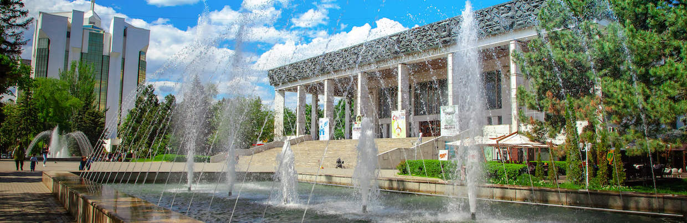
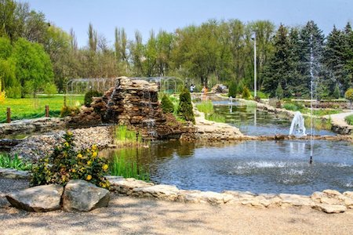
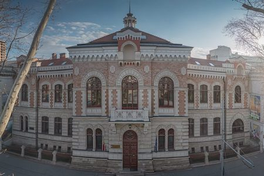
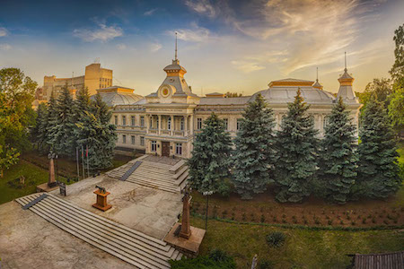
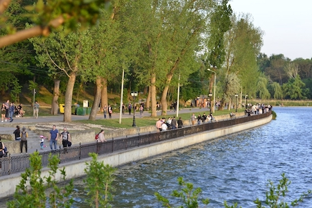
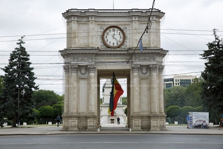
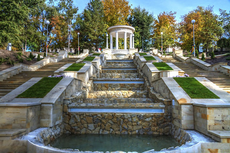
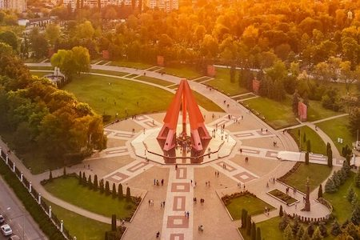
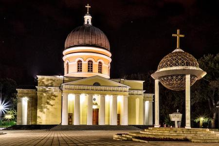
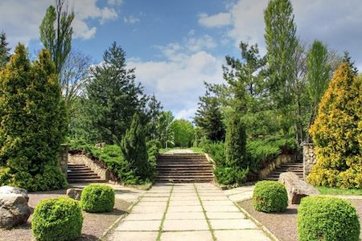

Oraşului Chişinău

Chişinău este capitala Republicii Moldova şi un oraş care combină armonios atmosfera liniştită cu energia vieţii urbane moderne. Aici poţi simţi un mix interesant între clădirile vechi cu influenţe sovietice şi zonele noi, în continuă dezvoltare. Oraşul este cunoscut pentru spaţiile sale verzi, care oferă locuitorilor şi turiştilor posibilitatea de a se relaxa chiar în mijlocul agitaţiei urbane. Chişinăul are o viaţă culturală activă, cu evenimente, expoziţii şi activităţi care au loc pe tot parcursul anului. Străzile centrale sunt pline de cafenele, restaurante şi locuri unde poţi petrece timp plăcut cu prietenii. În acelaşi timp, oraşul păstrează o atmosferă calmă, ceea ce îl face uşor de explorat fără grabă. Transportul este accesibil, iar distanţele relativ mici permit descoperirea oraşului pe jos. Chişinăul este şi un centru important educaţional şi economic al ţării, atrăgând mulţi tineri. În serile de vară, parcurile şi zonele centrale devin locuri animate şi pline de viaţă. Per total, Chişinăul este un oraş echilibrat, în care tradiţia şi modernul se îmbină într-un mod plăcut şi autentic.
Explorează locaţiile din Oraşului Chişinău
Parcul Dendrarium

Parcul Dendrarium este unul dintre cele mai frumoase spaşii verzi din Chişinău, fiind locul perfect pentru o plimbare relaxantă în mijlocul naturii. Acesta impresionează prin diversitatea mare de arbori şi plante decorative, aduse din diferite colţuri ale lumii şi atent îngrijite. Aleile bine amenajate, lacurile mici şi podurile elegante creează un peisaj armonios şi foarte plăcut pentru vizitatori. Atmosfera liniştită îl transformă într-un refugiu ideal pentru cei care vor să se deconecteze de agitaţia oraşului. Parcul este frecvent ales pentru fotografii datorită cadrului natural deosebit. Indiferent de anotimp, Dendrarium oferă o experienţă diferită şi atractivă. Este un loc potrivit atât pentru localnici, cât şi pentru turişti. Vizitarea lui oferă o combinaţie perfectă între relaxare şi frumuseţe naturală.
Muzeul Naţional de Artă al Moldovei

Muzeul Naţional de Artă al Moldovei reprezintă un punct important pentru cultura artistică a oraşului Chişinău. Aici sunt expuse lucrări valoroase semnate de artişti moldoveni, dar şi de creatori internaţionali, acoperind o varietate de stiluri şi perioade. Clădirea muzeului, restaurată cu grijă, impresionează prin eleganţă şi rafinament. Vizitatorii au ocazia să descopere atât artă clasică, cât şi lucrări contemporane, într-un spaţiu calm şi inspiraţional. Expoziţiile temporare adaugă diversitate şi aduc mereu ceva nou publicului. Este un loc ideal pentru cei pasionaţi de pictură şi cultură. Muzeul oferă o perspectivă artistică asupra identităţii moldoveneşti. Vizitarea lui este o experienţă educativă şi plăcută.
Muzeul Naţional de Istorie a Moldovei

Muzeul Naţional de Istorie a Moldovei oferă o imagine amplă asupra trecutului ţării, de la cele mai vechi perioade până în prezent. Expoziţiile includ artefacte istorice, documente şi obiecte care ilustrează evoluţia societăţii. Situat în centrul oraşului, muzeul este uşor accesibil şi foarte bine organizat. Î n faţa clădirii se află celebra statuie a Lupoaicei Capitoline. Vizitatorii pot descoperi evenimente importante şi momente definitorii din istoria Moldovei. Atmosfera este educativă şi captivantă, fiind potrivită pentru toate vârstele. Ghidajele oferă explicaţii suplimentare şi detalii interesante. Este un loc esenţial pentru înţelegerea identităţii naţionale.
Parcul Valea Morilor

Valea Morilor este unul dintre cele mai îndrăgite locuri de relaxare din Chişinău, fiind frecventat zilnic de localnici şi turişti. Lacul central, înconjurat de alei şi vegetaţie, oferă un peisaj spectaculos şi liniştitor. Scările monumentale reprezintă un element arhitectural iconic al zonei. Vizitatorii pot face plimbări lungi, jogging sau pot petrece timp în aer liber. Posibilitatea de a închiria bărci adaugă un plus de atractivitate. Atmosfera este plăcută în orice moment al zilei. Parcul este ideal pentru fotografii şi momente de relaxare. Este o adevărată oază de linişte în mijlocul oraşului.
Arcul de Triumf

Arcul de Triumf este unul dintre cele mai cunoscute simboluri ale oraşului Chişinău. Construit în secolul al XIX-lea, acesta marchează evenimente istorice importante. Este situat în centrul oraşului, într-o zonă foarte animată. Monumentul impresionează prin simplitatea şi eleganţa sa arhitecturală. Este un punct de atracţie pentru turişti şi un loc popular pentru fotografii. Seara, iluminarea îi oferă un aspect deosebit. Arcul face parte din identitatea vizuală a oraşului. Vizitarea lui este o oprire obligatorie pentru oricine ajunge în Chişinău.
Scara Cascadelor

Scara Cascadelor este una dintre cele mai spectaculoase amenajări urbane din Chişinău. Aceasta face legătura între Parcul Valea Morilor şi partea superioară a oraşului. Designul în trepte, combinat cu elemente de apă, creează un efect vizual impresionant. De sus, vizitatorii pot admira o panoramă frumoasă asupra lacului şi a împrejurimilor. Zona a fost recent renovată şi este foarte bine întreţinută. Este un loc popular pentru plimbări şi fotografii. Atmosfera este modernă şi relaxantă. Scara Cascadelor oferă o experienţă urbană diferită şi atractivă.
Complexul Memorial Eternitate

Complexul Memorial Eternitate este unul dintre cele mai importante monumente dedicate eroilor celui de-al Doilea Război Mondial. Structura sa impunătoare şi simbolistica profundă transmit un mesaj puternic despre sacrificiu şi memorie. Cele cinci coloane înalte reprezintă anii de război, iar flacăra veşnică din centru simbolizează respectul etern pentru cei căzuţi. Spaţiul este amenajat într-un mod sobru şi liniştit. Vizitatorii vin aici pentru a reflecta şi a înţelege mai bine trecutul. Este un loc încărcat de emoţie şi semnificaţie istorică. Complexul reprezintă un punct important al memoriei colective. Vizitarea lui oferă o experienţă profundă şi educativă
Catedrala Naşterea Domnului

Catedrala Naşterea Domnului este principalul lăcaş de cult din Chişinău şi un simbol al spiritualităţii locale. Construită în stil neoclasic, aceasta impresionează prin echilibrul şi simplitatea formelor. Interiorul este decorat cu icoane şi fresce care creează o atmosferă solemnă. Situată în centrul oraşului, catedrala este uşor accesibilă vizitatorilor. Este un loc de linişte, rugăciune şi reculegere. Clopotniţa din apropiere completează ansamblul arhitectural. Este vizitată atât de credincioşi, cât şi de turişti. Oferă o experienţă spirituală şi culturală deosebită.
Grădina Botanică Naţională

Grădina Botanică Naţională este un loc perfect pentru cei care iubesc natura şi liniştea. Aici se regăsesc numeroase specii de plante, arbori şi flori, organizate în zone tematice. Peisajele sunt atent îngrijite şi oferă un cadru ideal pentru plimbări şi fotografii. Vizitatorii pot explora lacuri, sere şi alei pitoreşti. În sezonul cald, grădina devine un adevărat spectacol de culori şi parfumuri. Atmosfera este relaxantă şi reconfortantă. Este potrivită pentru toate vârstele şi pentru orice tip de vizitator. O vizită aici oferă o experienţă naturală deosebită.